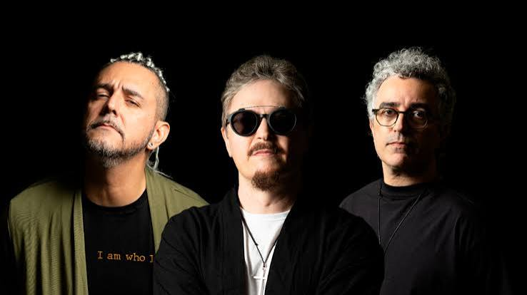

Sobre a Oficina G3
Com mais de três décadas de estrada, o Oficina G3 consolidou-se como uma das bandas mais importantes da música cristã no Brasil e na América Latina. Reconhecida por sua sonoridade marcante que mistura rock, metal, pop e elementos progressivos, a banda tem um legado que atravessa gerações — impactando vidas com mensagens de fé, esperança e transformação.
Fundada nos anos 1980, o G3 revolucionou o cenário gospel com qualidade técnica, letras profundas e uma presença de palco eletrizante. Álbuns como Indiferença, Acústico, Humanos, Depois da Guerra e Histórias e Bicicletas são considerados marcos na música cristã contemporânea, trazendo à tona sucessos que ainda ecoam nos corações de milhares de fãs.
Integrantes

Juninho Afram
Sinônimo de excelência musical, inovação e autenticidade. Reconhecido como um dos maiores guitarristas do Brasil, ele é fundador e líder da banda Oficina G3, com quem trilha uma história de mais de 30 anos levando o rock cristão a novos patamares — tanto artisticamente quanto espiritualmente.
Multi-instrumentista, produtor musical e compositor, Juninho é conhecido por sua técnica refinada, solos marcantes e estilo versátil, que transita com naturalidade entre o hard rock, o progressivo e o worship moderno. Seu trabalho influenciou gerações de músicos e ajudou a moldar a identidade da música gospel contemporânea no país.
Ao longo da carreira, participou diretamente da produção dos principais álbuns do Oficina G3, imprimindo sua assinatura musical em discos que se tornaram clássicos como Indiferença, O Tempo, Humanos e o premiado Depois da Guerra. Além da guitarra, também assumiu os vocais principais em diversas fases da banda como no álbum "Além do que os Olhos Podem Ver", sempre se reinventando com excelência.
Fora dos palcos, Juninho Afram é um mentor respeitado no meio musical, já tendo ministrado workshops e palestras pelo Brasil e exterior. Também é referência em equipamentos e timbres, sendo endorsee de marcas internacionais e inspiração para músicos de diferentes estilos e contextos.
Em sua atual fase, à frente da “DDG Reloaded Tour” com o Oficina G3, Juninho vive um momento de celebração com os fãs — revisitanto os grandes clássicos da banda com a mesma intensidade e paixão de sempre. Mais do que um guitarrista virtuoso, ele representa a força de uma mensagem que transcende o som e toca o coração de milhares de pessoas.
Jean Carllos
Com presença marcante nos palcos e uma assinatura sonora inconfundível, Jean Carllos é um dos músicos mais respeitados da cena cristã brasileira. Tecladista do Oficina G3 desde o final dos anos 90, ele se destacou rapidamente por sua musicalidade expressiva, arranjos ousados e uma performance sempre carregada de emoção e entrega.
Ao longo de mais de duas décadas no G3, Jean foi essencial para a transição musical da banda, participando ativamente dos álbuns mais experimentais e conceituais, como Humanos, Depois da Guerra e Histórias e Bicicletas. Seu trabalho une técnica apurada, sensibilidade e criatividade, trazendo atmosferas que vão do progressivo ao sinfônico, do pop ao rock moderno — sempre com identidade própria.
Além dos teclados, Jean também se destaca como compositor e produtor, contribuindo para a construção de arranjos marcantes e letras que dialogam com temas profundos da espiritualidade cristã e da vida cotidiana. Sua musicalidade é reconhecida pela capacidade de emocionar e pela constante busca por inovação sem perder a essência.
Hoje, ao lado de Juninho Afram e Duca Tambasco, Jean Carllos integra a formação atual do Oficina G3 na aclamada turnê “DDG Reloaded”, que revive a força do álbum Depois da Guerra com novos elementos e a mesma intensidade que marcou toda uma geração.
Mais do que um instrumentista, Jean Carllos é um artista completo, que transforma suas emoções em som e carrega em cada nota a missão de tocar vidas por meio da música.


Duca Tambasco
Com estilo marcante, consistência técnica e um feeling musical apurado, Duca Tambasco é uma das maiores referências do baixo no rock cristão brasileiro. Integrante do Oficina G3 desde 1994, ele ajudou a consolidar a identidade sonora da banda, sendo peça fundamental em todas as fases do grupo — da explosão do rock gospel nos anos 90 à sofisticação musical das produções mais recentes.
Autodidata e apaixonado pela música desde cedo, Duca se destaca por sua versatilidade: é capaz de criar linhas de baixo intensas e complexas sem perder a musicalidade e o bom gosto. Sua linguagem une peso e groove na medida certa, fazendo do baixo um elemento melódico e rítmico indispensável nas composições do G3.
Ao longo de sua trajetória com a banda, participou da gravação de discos históricos como Indiferença, O Tempo, Humanos, Depois da Guerra e Histórias e Bicicletas — sempre deixando sua assinatura criativa e consolidando sua reputação como um dos maiores baixistas da música cristã contemporânea.
Fora dos palcos, Duca é um entusiasta da música e da técnica, influenciando jovens músicos por meio de workshops, vídeos e conteúdo educacional. Também é endorsee de grandes marcas de instrumentos e equipamentos, sendo admirado não só por seu talento, mas também pela humildade e generosidade com que compartilha conhecimento.
Na atual “DDG Reloaded Tour”, Duca vive um momento especial de reencontro com os fãs, ao lado de Juninho Afram e Jean Carllos. Mais do que acompanhar a base das músicas, seu baixo pulsa com intensidade — como o coração que mantém viva a energia do Oficina G3.